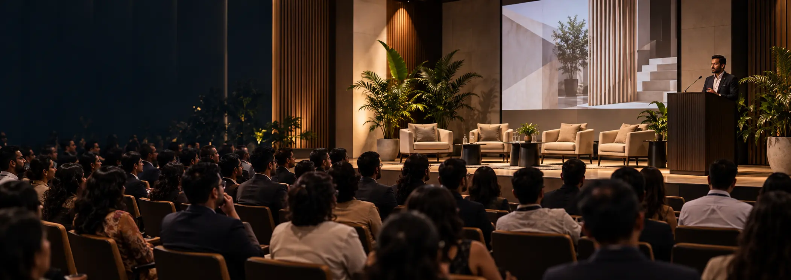

Events
Learn. Connect. Grow.
Join SLIID’s workshops, talks, exhibitions and member events.
Upcoming events
View past events →New events will be announced soon
Confirmed dates and registration details will be published here.
Past events
Past events will appear here
Published workshops, exhibitions and member activities will be added to this archive.
Be part of what’s next.
Follow SLIID’s official channels when they are published for future event announcements.